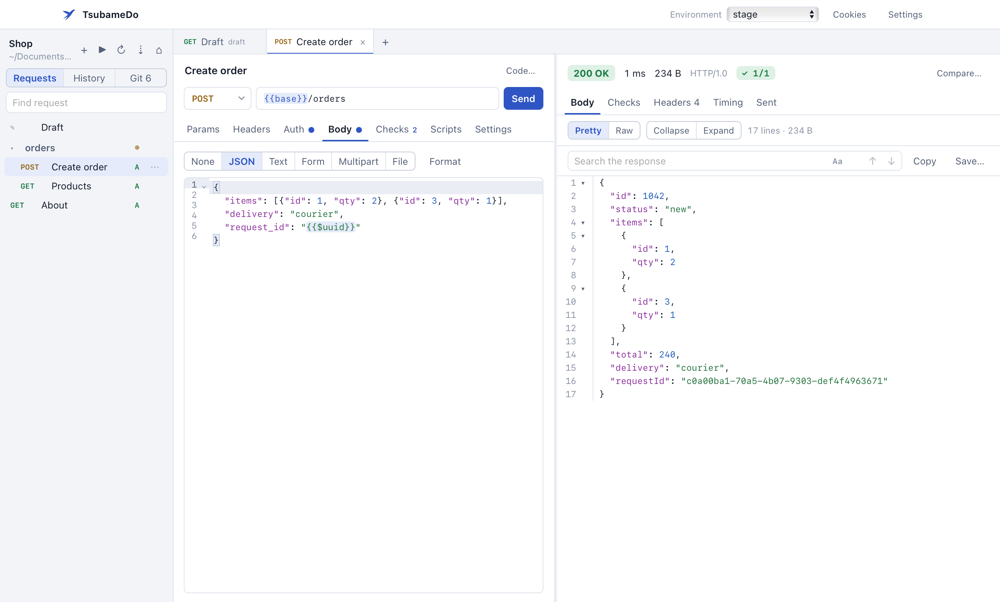
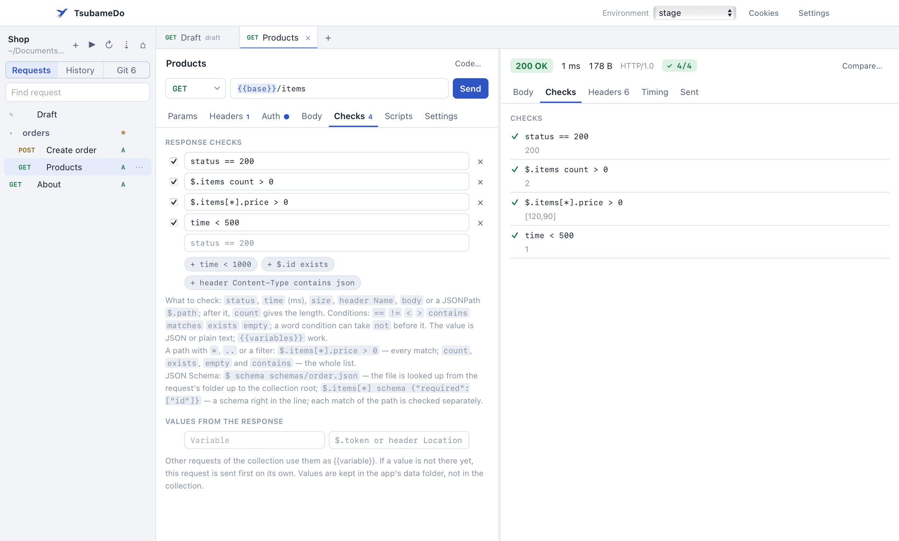
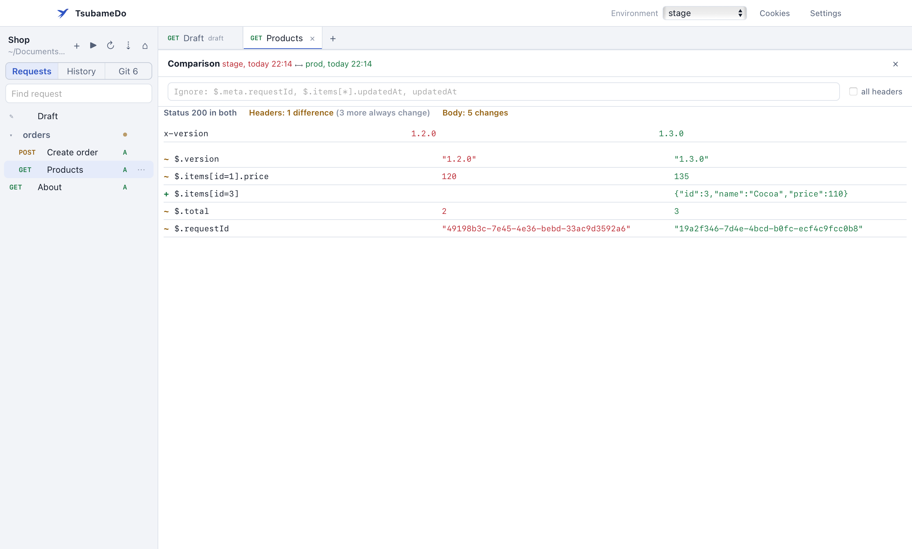
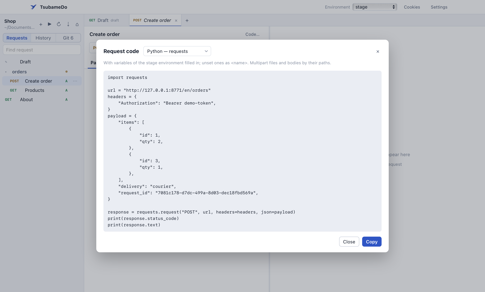

Collections in git
Each request lives in its own TOML file. Saving rewrites only the lines you changed, so diffs stay clean. Passwords and tokens can go into *.local.toml, which stays out of git. Commit, pull and push right from the app.
Send requests, check responses, and keep collections in git next to your code. The window opens in a second, and a response of hundreds of megabytes scrolls without lag. No sign-up required.
Free, for macOS, Windows and Linux.

I got tired of Insomnia taking ages to start, freezing on large responses and asking me to create an account just to send a request. I wanted an app that opens instantly, calmly shows JSON of hundreds of megabytes and keeps everything in plain files. That’s how TsubameDo started.
Each request lives in its own TOML file. Saving rewrites only the lines you changed, so diffs stay clean. Passwords and tokens can go into *.local.toml, which stays out of git. Commit, pull and push right from the app.
A response over 8 MB goes to a temporary file instead of memory. A 263 MB JSON downloads in a quarter of a second and takes about 30 MB. Search and JSONPath filters cover the whole response.
The line [capture] token = '$.token' takes the token from a response, and other requests just use {{token}}. If there is no token yet, the login request runs on its own. Checks go one per line: status == 200.
Run JavaScript before and after a request. Tests from Postman and Insomnia that use pm.test, pm.expect and CryptoJS work unchanged.
Brings over collections and environments from Insomnia and Postman, and reads OpenAPI 3, Swagger 2 and HAR files from the browser. For a curl command, just paste it into the URL bar.
OAuth 2.0 with sign-in in the browser, Digest, AWS Signature v4, separate cookies for each environment. Works through the system proxy and SOCKS5, supports client certificates.
Send a request to stage and prod and see how the responses differ. JSON is compared by content, not line by line, and every difference shows its path.
Ready-to-run code for curl, Python, JavaScript, Go, Java, C#, PHP and a dozen more languages, with variables already filled in.


id, so a new product in the middle of the list doesn’t shift the rest.
| macOS 12+ | Apple Silicon (M1 and later) | Intel |
|---|---|---|
| Windows 10, 11 | x64 installer | |
| Linux | AppImage x86_64 · .deb | AppImage ARM64 · .deb |
| CLI | macOS Apple Silicon · macOS Intel · Windows · Linux x86_64 · Linux ARM64 | |
The app isn’t signed with Apple or Microsoft certificates, so on first launch the system warns that it doesn’t know the developer. You only need to confirm once.
On macOS 12–14 it’s simpler: right-click TsubameDo in Applications and choose Open.
Or use Terminal: xattr -dr com.apple.quarantine /Applications/TsubameDo.app
The window needs WebView2. Windows 10 and 11 usually have it; if not, the installer downloads it.
chmod +x TsubameDo-*.AppImage and run it.sudo apt install ./tsubamedo_*.debRequires WebKitGTK 4.1, which ships with Ubuntu 22.04, Debian 12, Fedora 38 and later.
Compute the checksum and compare it with the .sha256 file on the release page.
On a Mac that’s shasum -a 256 ~/Downloads/TsubameDo-*.dmg, on Linux sha256sum,
on Windows Get-FileHash.
Run the same collections from the command line, with checks, chains and a JUnit report that GitLab, Jenkins and GitHub Actions understand. macOS doesn’t block a file downloaded with curl.
# Apple Silicon Mac. For Intel and Linux, take the archive name from the release page curl -L https://github.com/asqd/tsubamedo/releases/latest/download/tsubamedo-VERSION-macos-apple-silicon.tar.gz | tar xz sudo mv tsubamedo /usr/local/bin/ tsubamedo run -e stage --junit report.xml # whole collection, exit code for CI tsubamedo compare orders/list -e stage --with prod tsubamedo code orders/create -l python-requests
There’s nothing to sign up for, and the app sends nothing to the developer. Collections live in a folder you choose; history, cookies and tokens stay on your computer. The only traffic is the requests you send.